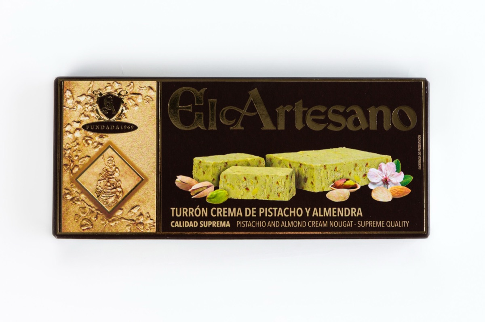
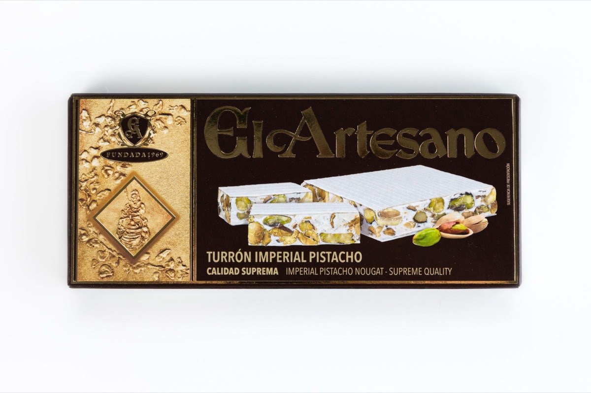
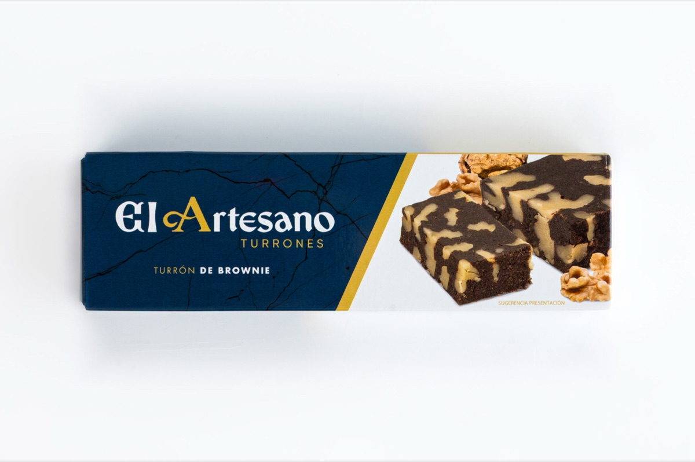

Turrón Crema de Pistacho y Almendra Calidad Suprema
Turrón blando de pistacho y almendra, en formato de 150 g.
Ver ficha oficial ↗TURRONES • JIJONA
Tres elaboraciones de la tienda oficial para preparar un lote con referencias y cantidades claras.

Tres referencias reales. Las opciones, precios y existencias se confirman en la tienda oficial.
Turrón blando de pistacho y almendra, en formato de 150 g.
Ver ficha oficial ↗
Turrón duro de pistacho y almendra, en formato de 150 g.
Ver ficha oficial ↗
Turrón inspirado en brownie, con cacao y nueces, en formato de 130 g.
Ver ficha oficial ↗TU LISTA LOCAL
Tu selección queda en este navegador. No reserva productos ni envía pedidos.
La web de El Artesano enlaza tiendaturron.com como tienda online oficial.
La tienda incluye turrones, porciones, pastelería y opciones de regalo.
Hay una página específica de información sobre alérgenos; la ficha de cada elaboración prevalece.